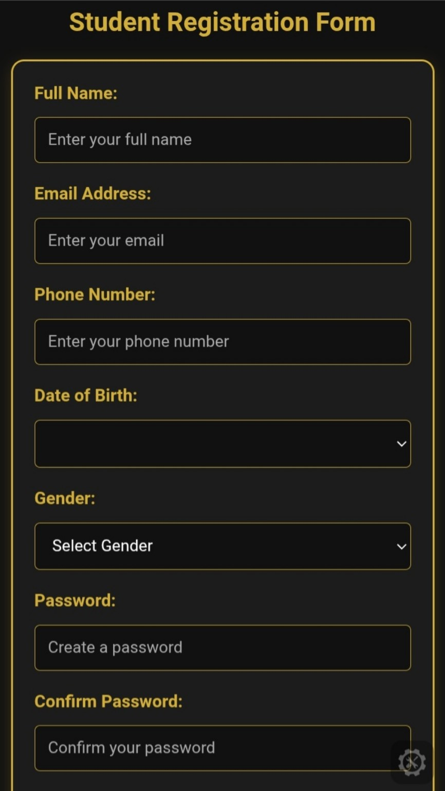
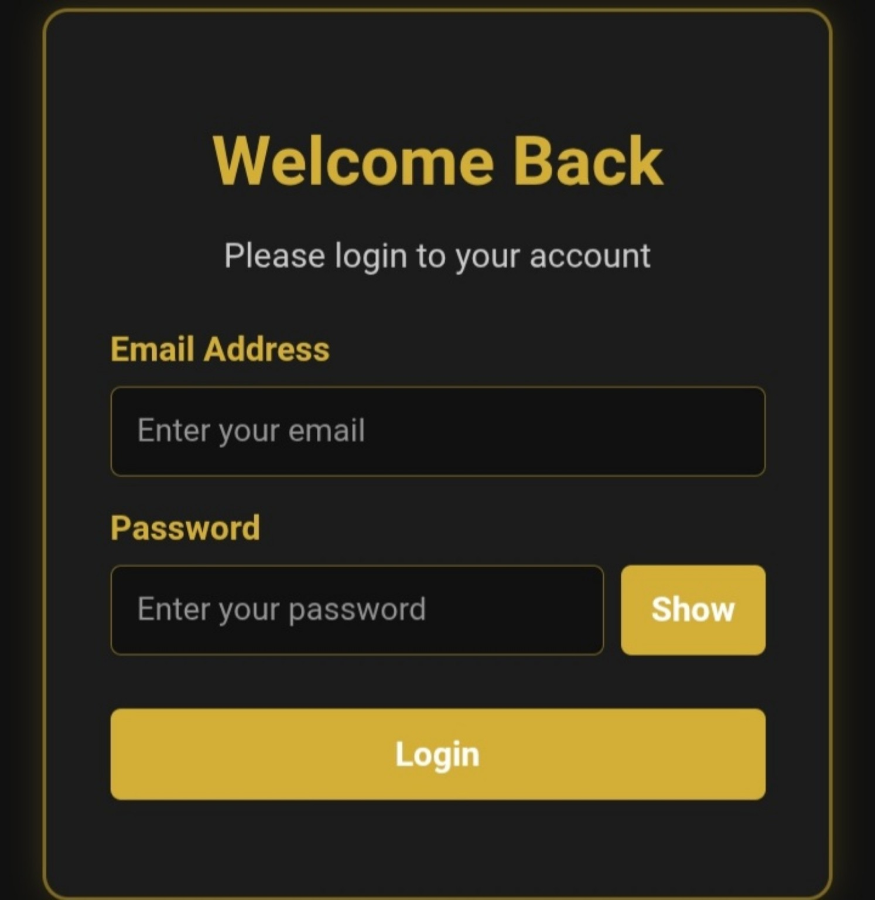
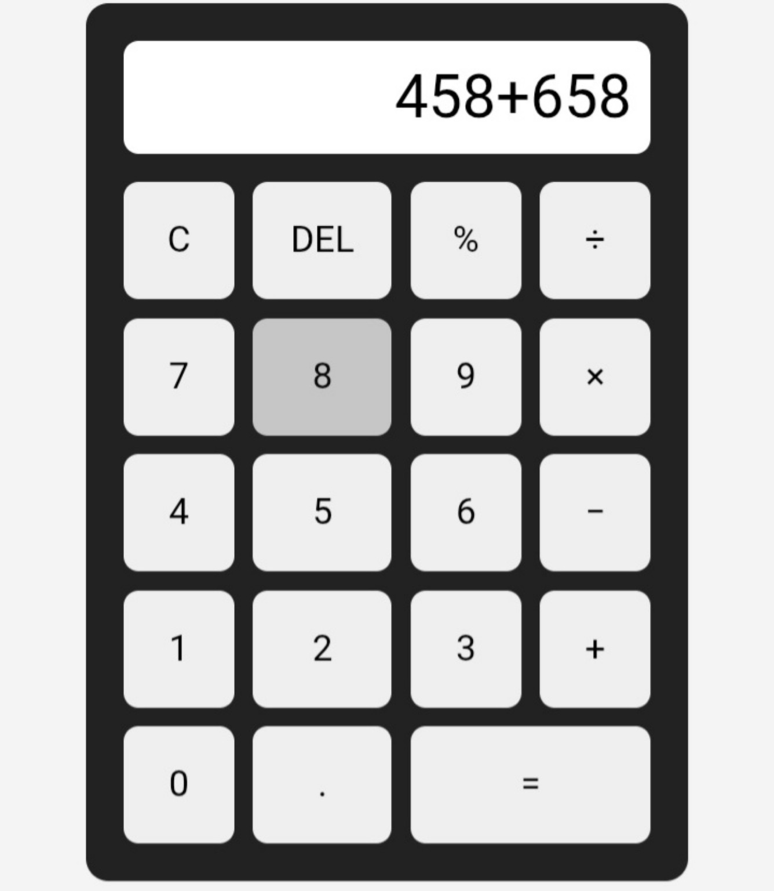

Web development
HTML, CSS and JavaScript.
PERSONAL PORTFOLIO
Hello, I'm
I’m interested in using technology, clear communication and creative thinking to solve practical problems. I’m building my web development skills and growing my footwear business, Tkay Footwears.
01 / ABOUT
I’m a recent Bsc Ed Computer Science Education graduate, i have an NCE qualification and a practical interest in technology, education and business.
Through my experience operating Tkay Footwears, I communicate with customers, respond to enquiries, discuss product options, support sales and coordinate day-to-day business activities.
I learned HTML, CSS and JavaScript while i developed a website for the business. I enjoy learning new tools and turning ideas into useful, practical work.
Let’s connect ↗02 / CAPABILITIES
A mix of developing technical skills and practical, transferable experience.
HTML, CSS and JavaScript.
Computer literacy, AI Tools for Work, UI/UX Design and Data Analytics courses.
Customer communication, enquiry handling, clear verbal and written communication.
Sales support, product promotion, customer relationships and day-to-day coordination.
Teaching practice experience and explaining information to support learners.
Problem-solving, organisation and willingness to learn new tools and procedures.
03 / EXPERIENCE
Communicate directly with customers, respond to enquiries, discuss footwear options, support sales and product promotion, maintain customer relationships and coordinate product availability. Also developing a website for the business.
Completed a three-month teaching practice placement as part of teacher preparation during my NCE programme at Federal College of Education, Kano.
Completed a three-month teaching practice placement during my studies at Ahmadu Bello University, Zaria, gaining practical experience in explaining information and supporting learners.
04 / SELECTED WORK
WEB DEVELOPMENT PRACTICE
Practical learning projects created with the front-end web development skills I am developing.

A registration form interface with fields for personal details, date of birth, gender and password confirmation.

A login interface with email and password fields, a password visibility control and a login button.

A calculator interface for practising arithmetic operations, button interactions and JavaScript logic.
A footwear business focused on stylish, durable and affordable shoes. My work includes customer communication, product promotion and business operations.
Enquire about the business ↗Designed, developed and published a business website for a Nigerian footwear brand using HTML, CSS and JavaScript. The website presents the footwear collection and allows customers to make enquiries and place orders through WhatsApp.
Technologies: HTML5, CSS3, JavaScript and GitHub Pages.
Completed · Live Visit Live Website ↗Academic project on AI-assisted learning tools among university students, completed as part of my B.Sc. Ed. Computer Science Education programme.
Completed05 / EDUCATION & DEVELOPMENT
ACADEMIC QUALIFICATIONS
Ahmadu Bello University, Zaria
Federal College of Education, Kano
COURSES & CERTIFICATES
Talentcraft / Literate Nigeria Digital Skills Acquisition Initiative
Talentcraft / Literate Nigeria Digital Skills Acquisition Initiative
Talentcraft / Literate Nigeria Digital Skills Acquisition Initiative
SK TECH Academy — Four-week online course
06 / CREDENTIALS
Selected academic and business credentials.
Federal College of Education, Kano — Statement of Results. Major subjects include Education, Teaching Practice, Biology and Computer Science.
Registered business name under the Corporate Affairs Commission. Business activity: trading and production of shoes.
Talentcraft / Literate Nigeria Digital Skills Acquisition Initiative.
Talentcraft / Literate Nigeria Digital Skills Acquisition Initiative.
Talentcraft / Literate Nigeria Digital Skills Acquisition Initiative.
SK TECH Academy — Successfully completed afour-week online course in Web Development,demonstrating foundational knowledge and practical skills.
06 / CONTACT
I’m open to connecting about entry-level opportunities, collaboration, technology and business.